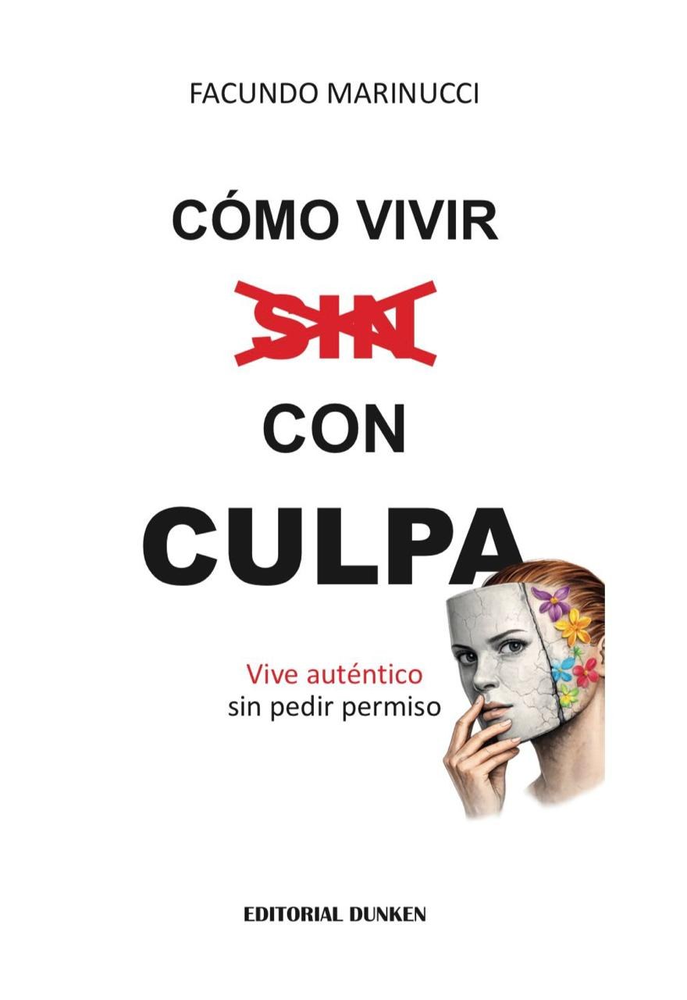

Psicólogo Existencial • Logoterapeuta • Terapeuta de Parejas
Soy psicólogo pero sobre todo persona. Le da sentido a mi vida acompañar a que otros le den sentido a la suya. Trabajo en mi autenticidad y en mis procesos de despertar la conciencia a diario para ayudar a otros a despertar.

¿Y si la culpa no fuera el problema... sino la solución? El intento de solución que encontraste para responder quizás a otro problema. Un traje a medida que en su momento te sirvió y ya te queda chico. Ya no te sirve porque te domina la culpa de ser auténtico. Este libro te ayuda a usarla a tu favor para conocerte desde la filosofía, la psicología y la espiritualidad, con ejercicios prácticos al final de cada capítulo y dibujos de pacientes que lo representan.
Disponible con dedicatoria a pedido
Un espacio de escucha genuina para explorar tu mundo interior, tus vínculos y el sentido de tu existencia.
Un espacio propio para conocerte mejor, trabajar lo que te pesa y avanzar hacia una versión más auténtica de vos mismo.
Un enfoque que va más allá del síntoma: exploramos el sentido de tu existencia, quién sos y cómo querés vivir. La búsqueda de propósito como motor del cambio.
Acompañamiento para mejorar la comunicación, resolver conflictos y construir un vínculo más sano, consciente y profundo.
Comparto reflexiones, entrevistas y contenido sobre psicología, existencialismo y vínculos en mis redes.
Combino formación académica sólida con una presencia humana y cálida en cada sesión. No soy solo el psicólogo — soy alguien que también trabaja su propio despertar.
Escribime directo por Instagram y coordinamos una primera consulta.
Escribime por Instagram